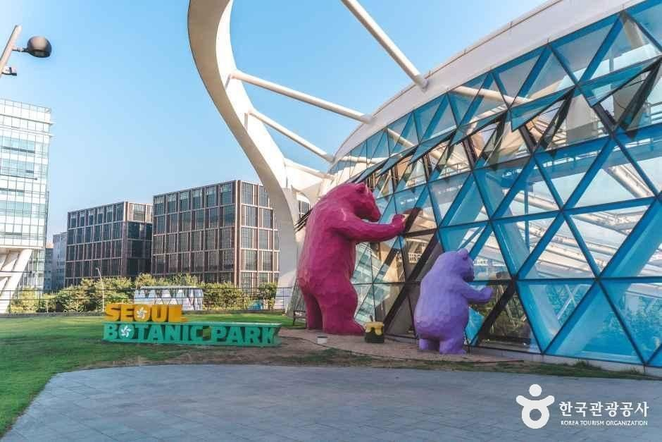
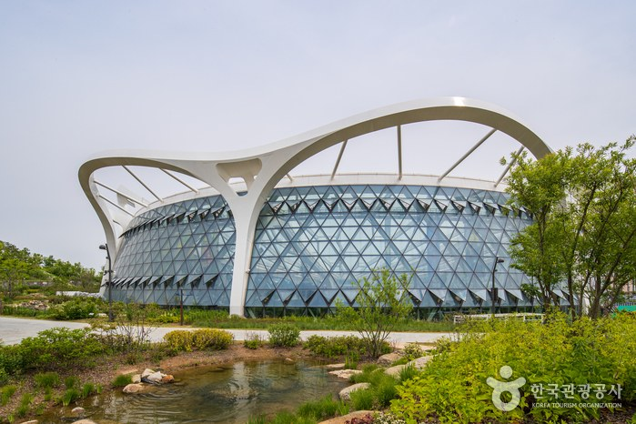
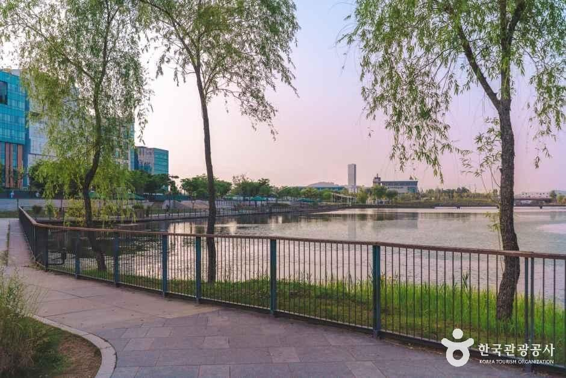
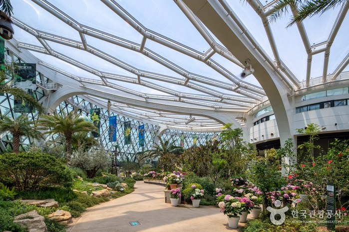
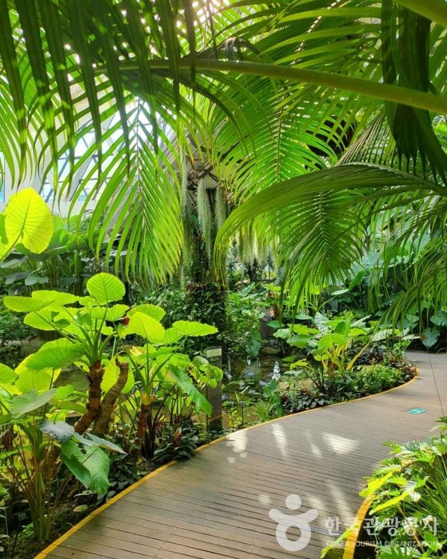
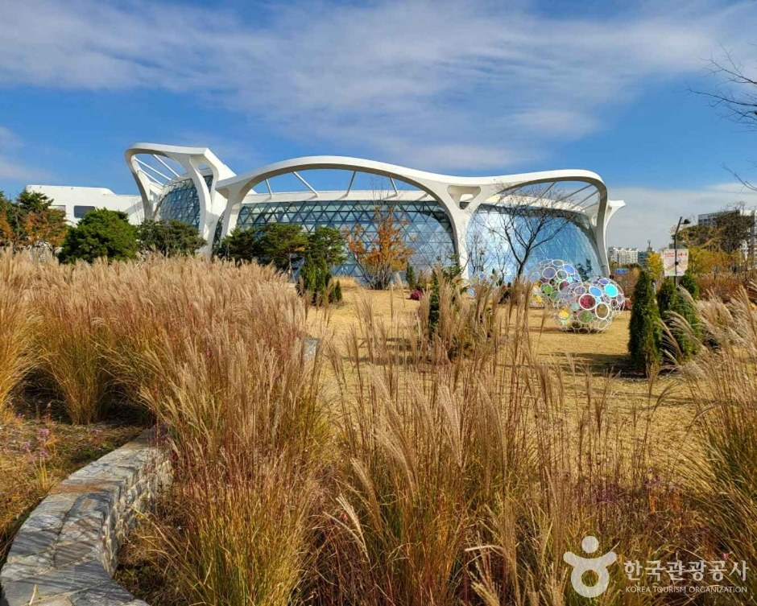

Seoul Botanic Park Guide: Overview
This Seoul Botanic Park guide covers one of the city's newest and calmest big green spaces. Seoul Botanic Park (서울식물원) is in Magok, Gangseo-gu, in western Seoul near Gimpo Airport. It's a mix of a city park and a botanical garden, and it also works as a plant research and conservation center.
The park covers an area about the size of 70 football fields. Its star is a huge greenhouse with a concave, plate-shaped roof, which the park says is the only one of its kind in the world. Inside are plants from 12 tropical and Mediterranean cities.

The Four Zones
| Zone | What It Is | Access |
|---|---|---|
| 🌳 Open Forest | Lawns, trees and walking paths | Outdoor, open all year |
| 🦢 Lake Garden | A lake with willow-lined paths | Outdoor, open all year |
| 🌾 Wetland Garden | Wetland boardwalks toward the Han River | Outdoor, open all year |
| 🌿 Thematic Garden | The greenhouse plus themed gardens | Ticketed · closed Mondays |


Inside the Plate-Shaped Greenhouse
The greenhouse is the reason most visitors come. Walkways wind through tall palms, ferns and flowering plants, and the Mediterranean section has olive trees, cacti and dry-climate plants. Upper walkways let you look down over the jungle-like canopy. Because it stays warm year-round, it's a good escape on a cold November or December day.



Visitor Information
| Item | Details |
|---|---|
| Address | 161 Magokdong-ro, Gangseo-gu, Seoul (서울 강서구 마곡동로 161) |
| Thematic Garden hours | Mar–Oct 09:30–18:00 (last entry 17:00) · Nov–Feb 09:30–17:00 (last entry 16:00) |
| Closed | Mondays (Thematic Garden and greenhouse) |
| Outdoor zones | Open all year |
| Fee | Ticket needed for the Thematic Garden; check the official site |
| Getting there | Near Magoknaru Station (Line 9, AREX) |
| Parking | Available |
| Contact | +82-2-2104-9716 |
Sources: Korea Tourism Organization (한국관광공사) and Seoul Botanic Park. Photos © Korea Tourism Organization. We didn't add any AI-generated images. Details may change, so check before you go.
Tips for Your Visit
- Plan 2–3 hours: about an hour in the greenhouse, then a loop around the Lake Garden.
- Go on a weekday morning for a quieter greenhouse and better photos.
- The greenhouse is warm and humid. Wear layers you can take off.
- Don't come on a Monday if you want to see the greenhouse.
- It's close to Gimpo Airport, so it's a good stop on your first or last day.
Pros & Cons
✅ Pros
- A huge, unusual plate-shaped greenhouse that's green all year.
- Big, quiet outdoor gardens that are free to walk.
- Easy to reach by subway and close to Gimpo Airport.
- Good for rainy or cold days.
⚠️ Cons
- The greenhouse is closed on Mondays.
- It's in western Seoul, far from Myeongdong and Hongdae.
- The greenhouse can get crowded on weekends.
Who It Suits
- Great for: Families, couples and plant lovers.
- Great for: Travelers with a few hours near Gimpo Airport.
- Great for: Anyone who wants a calm half-day away from busy downtown Seoul.
- Less ideal: If you only have one day for palaces and shopping in central Seoul.
Book Your Seoul Trip
Seoul Botanic Park FAQ
Is Seoul Botanic Park free?
The outdoor areas (Open Forest, Lake Garden and Wetland Garden) are open all year and free to walk. The Thematic Garden, which includes the big greenhouse, needs a ticket. Check the official website for current prices before you go.
What are Seoul Botanic Park's opening hours?
The Thematic Garden and greenhouse are open 09:30–18:00 from March to October (last entry 17:00) and 09:30–17:00 from November to February (last entry 16:00). They're closed on Mondays.
How do I get to Seoul Botanic Park?
It's at 161 Magokdong-ro, Gangseo-gu, Seoul, near Magoknaru Station (Line 9 and AREX). From Gimpo Airport it's only a few stops, so it's an easy first or last stop on a trip.
Is it good to visit in winter?
Yes. The greenhouse stays warm and green all year, with plants from 12 tropical and Mediterranean cities, so it's a good indoor option on cold or rainy days.
Is there parking?
Yes, the park has parking. It can fill up on weekends, so public transport is easier.